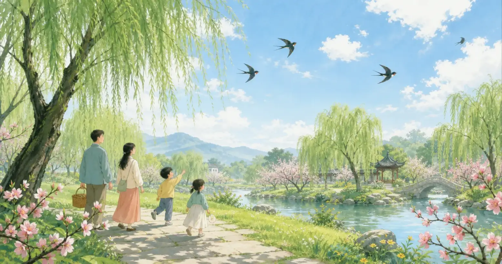
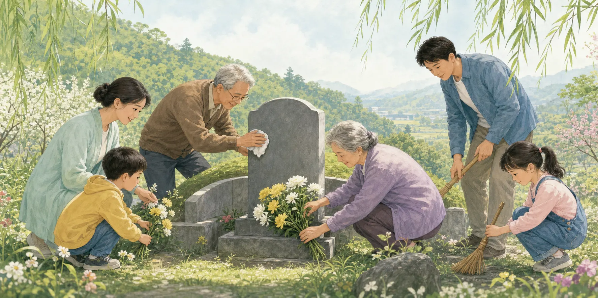
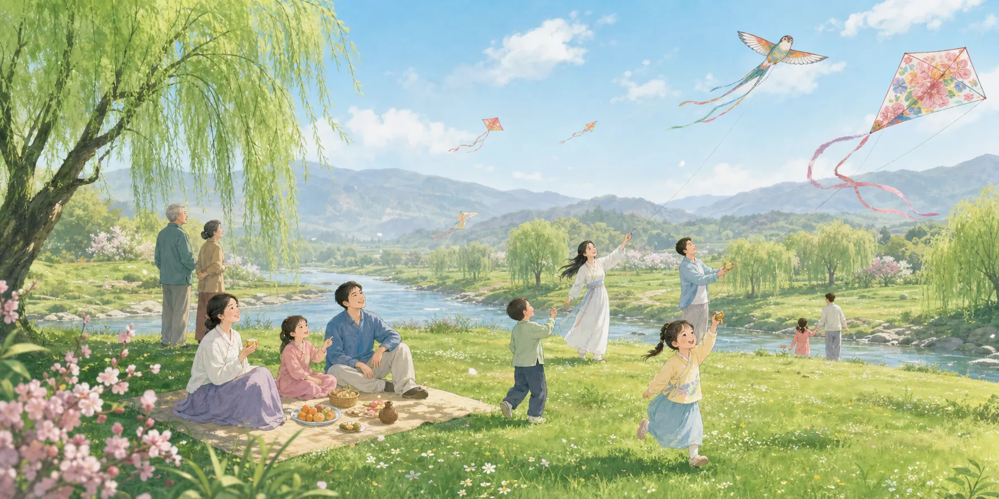
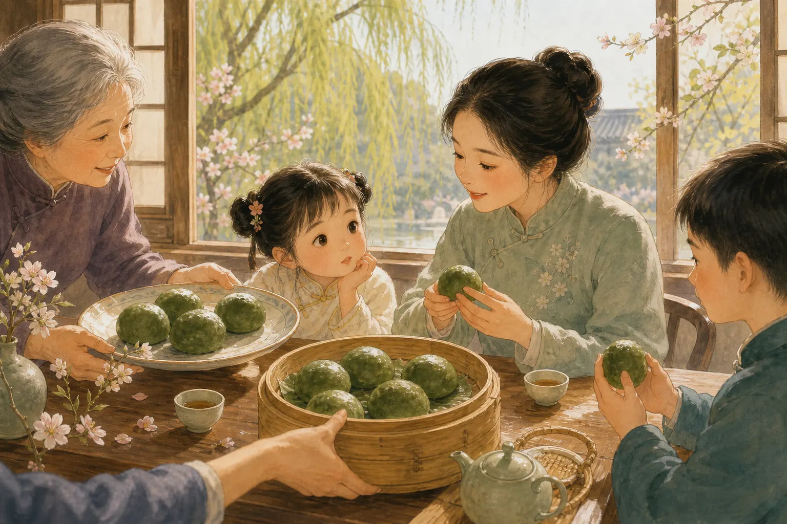
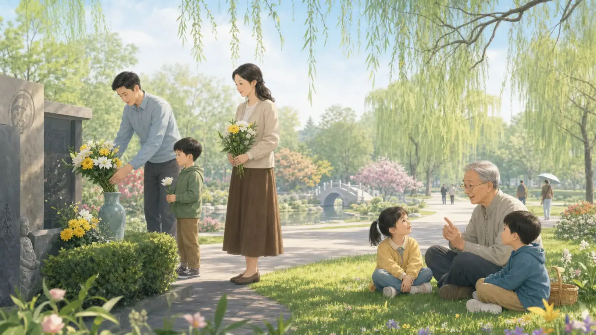

清明节
Qingming Festival
Page 1
春天里的清明
Qingming in Spring

Around Qingming, the weather turns warmer, trees grow green, and flowers begin to bloom.
清明节在春天。
这个时候，天气慢慢暖起来，树变绿了，花也开了，到处都清清亮亮的。
所以“清明”这个名字，也让人想到干净、明亮的春天。
Qingming Festival comes in spring.
At this time, the weather grows warmer, trees turn green, and flowers begin to bloom. Everything looks fresh and bright.
That is why the name Qingming makes people think of a clear, shining spring day.
Page 2
扫墓和思念
Remembering Family

During Qingming, many families quietly tidy graves, place flowers, and remember loved ones who have passed away.
到了清明节，很多家庭会去纪念已经离开的亲人。
大家会整理墓地，擦一擦墓碑，放上鲜花，也会安静地站一会儿。
对小朋友来说，这一天也常常是听家里大人讲家庭故事的时候。
During Qingming, many families remember loved ones who have passed away.
They tidy the gravesite, wipe the stone, place flowers, and stand quietly for a moment.
For children, this can also be a time to hear family stories from the adults around them.
Page 3
出去踏青吧
Time for a Spring Outing

After visiting graves, many people walk in fields, by rivers, or on gentle hills to enjoy spring.
清明节还有一个很有春天气息的习俗，叫“踏青”。
扫墓以后，很多人会到草地、河边或者小山坡上走一走，感受春风，看看新长出来的草和花。
所以清明的心情不只是安静的思念，也有温柔明亮的春天。
Qingming also has a spring tradition called taqing, which means going out to enjoy the season.
After visiting graves, many people walk in fields, by rivers, or on small hills to feel the spring breeze and look at the new grass and flowers.
So Qingming is not only about quiet remembrance. It is also full of the gentle brightness of spring.
Page 4
清明吃什么？
What Do People Eat?

In some places, people eat qingtuan, a round, soft green snack often enjoyed during Qingming.
在中国的一些地方，清明节时人们会吃青团。
青团圆圆的、软软的，常常是绿色的，里面可以包甜甜的豆沙或者别的馅料。
这样的食物，让这个节日多了一点春天里的生活味道。
In some parts of China, people eat qingtuan during Qingming.
Qingtuan are round, soft, and often green. They may be filled with sweet bean paste or other fillings.
Food like this gives the holiday a warm, everyday taste of spring.
Page 5
今天的清明节
Qingming Today

Today, people bring flowers to remember loved ones and also step into spring to see willows, kites, and fresh blossoms.
今天，人们还是会在清明节纪念亲人。
有人带鲜花，有人整理环境，也有人在心里轻轻地说一声“我想你”。
同时，大家也会走进春天里。清明把思念和春天放在一起，让人更懂得珍惜家人和时间。
Today, people still remember loved ones during Qingming.
Some bring flowers, some help keep the place tidy, and some quietly say in their hearts, "I miss you."
At the same time, people step into spring. Qingming brings remembrance and spring together, helping people treasure family and time.
清清亮亮的思念
Gentle Spring Remembrance
清明节有春天的风，也有家人的故事。
它让人们在绿色的季节里轻轻想起过去，也带着温柔继续往前走。
Qingming Festival carries the breeze of spring and the stories of family.
In this green season, it helps people gently remember the past and keep moving forward with warmth.